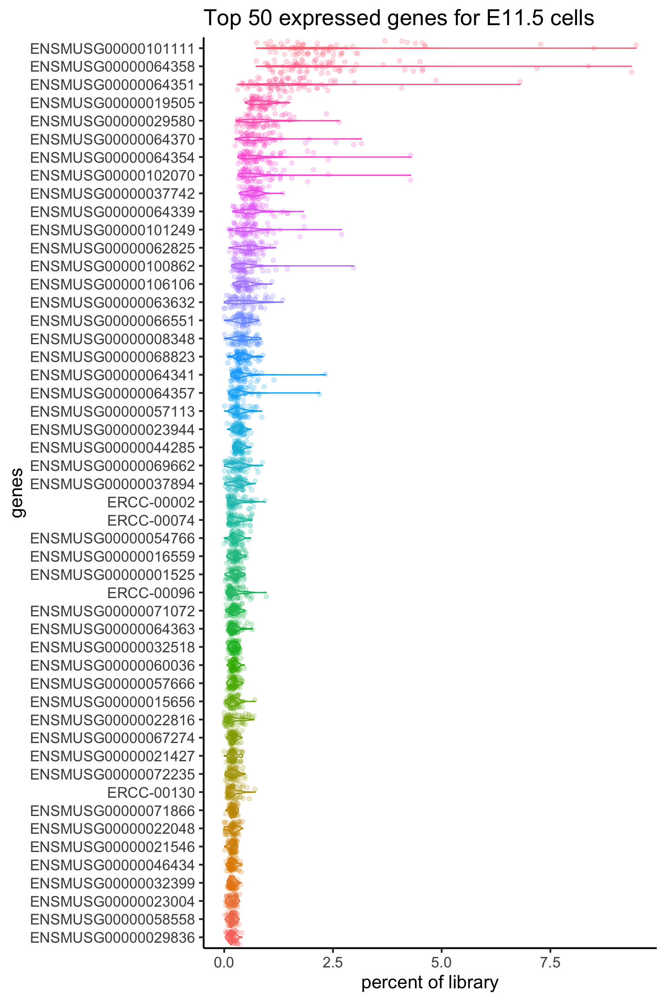
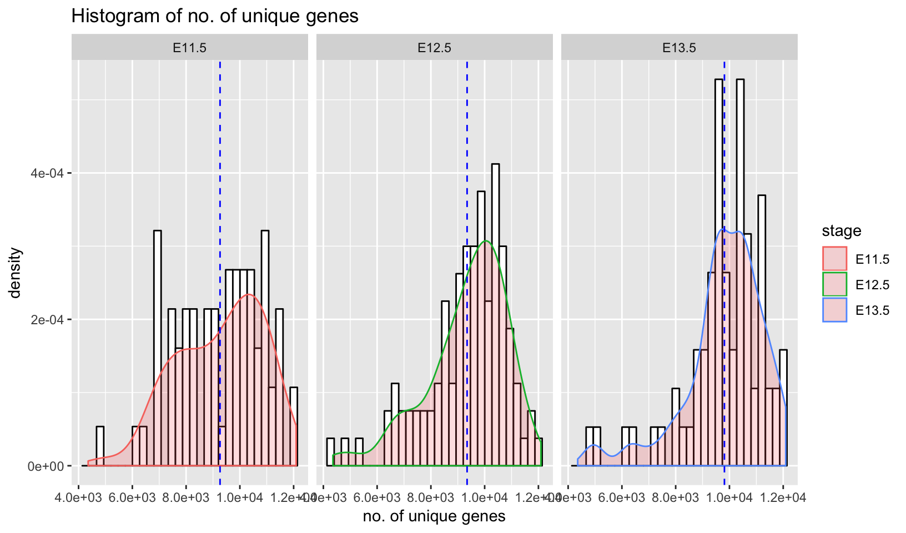
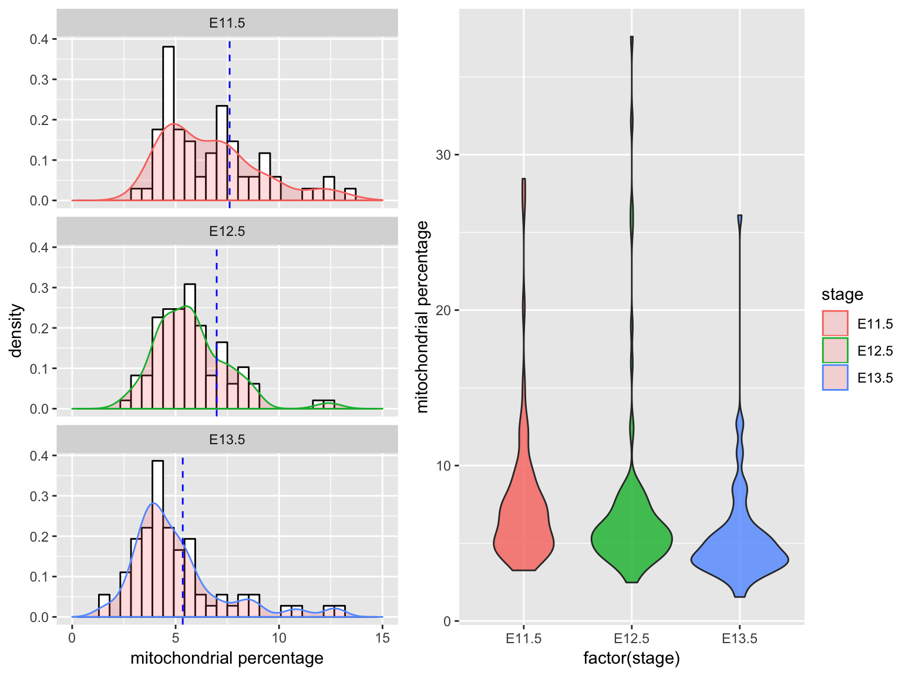
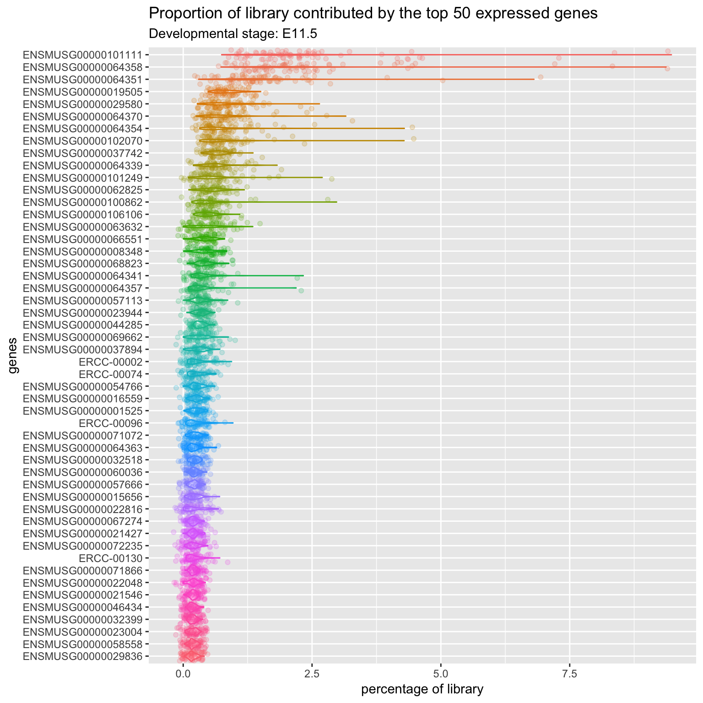

QC of single cell data
Sydney Precision Bioinformatics Group
03/05/2019
0.1 Introduction
One of the first steps in single-cell RNA-seq analysis is to perform a quality check of the reads you have sequenced. This process is part of cleaning our expression matrix in preparation for downstream data analysis. There are multiple quality control (QC) tools for sequencing data that can be used for both bulk and single-cell RNA-seq data. Here, we will work on performing some of the QC measures and generate a report on the quality of our single cells.
0.1.1 Load in packages
Load in packages required to generate the QC plots.
library(DropletUtils)
library(dplyr)
library(ggplot2)
library(scales)
library(RColorBrewer)
library(ggpubr)0.1.2 The Dataset
To illustrate cell QC, today we will be performing our analysis on a single-cell mouse liver dataset generated by Su et al. (2017). This liver dataset contains 507 cells at seven developmental stages between embryonic day 11.5 and postnatal day 2.5. The cells were sequenced using the Fluidigm C1 platform and the reads are paired end. The file containing the raw count matrix is located in the ‘X’ folder in your working directory.
As the dataset containing the read counts is stored in a csv file, we can load the data into R using the read.csv() function.
scLiver <- read.csv("data/GSE87795_counts.csv")First, inspect a small portion of the expression matrix.
head(scLiver[,1:5])## X E11.5_C01 E11.5_C03 E11.5_C05 E11.5_C06
## 1 ENSMUSG00000102693 0 0 0 0
## 2 ENSMUSG00000064842 0 0 0 0
## 3 ENSMUSG00000051951 0 0 0 0
## 4 ENSMUSG00000102851 0 0 0 0
## 5 ENSMUSG00000103377 0 0 0 0
## 6 ENSMUSG00000104017 0 0 0 0dim(scLiver)## [1] 51918 508This dataset contains 51918 rows and 507 columns. Each row corresponds to a gene, and each column corresponds to a single cell.
With some code, we can produce a frequency table of the number of cells at each developmental stage.
stage <- unlist(lapply(strsplit(colnames(scLiver), "_"), "[[", 1))
table(stage)## stage
## E11.5 E12.5 E13.5 E14.5 E16.5 E18.5 P2.5 X
## 70 100 71 99 78 58 31 1Note that the first column of the matrix records the gene ENSEMBLE name. Assigning this columan as the rownames of the count matrix creates a count matrix that only contains numerical values; this will make subsequent analyses easier.
rownames(scLiver) <- scLiver[,1]
scLiver <- scLiver[,-1]
head(scLiver[,1:5])## E11.5_C01 E11.5_C03 E11.5_C05 E11.5_C06 E11.5_C07
## ENSMUSG00000102693 0 0 0 0 0
## ENSMUSG00000064842 0 0 0 0 0
## ENSMUSG00000051951 0 0 0 0 0
## ENSMUSG00000102851 0 0 0 0 0
## ENSMUSG00000103377 0 0 0 0 0
## ENSMUSG00000104017 0 0 0 0 00.1.3 Quick Pre-processing of the Matrix
A simple way to make single-cell datasets manageable for downstream analysis is to remove genes that are not expressed in any cells. Removing these genes does not affect the outcome of downstream analyses, such as clustering, yet helps to improve computational speed dramatically.
idx <- which(rowSums(scLiver) == 0)
scLiver <- scLiver[-idx, ]
dim(scLiver)## [1] 37766 507Quick quiz
How many genes do we have now?
0.2 Quality Control of Single Cell Data
0.2.1 QC1: Waterfall Plot
The waterfall plot shows the log count against the log rank of each barcode. The barcodes are ranked based on the number of count each barcode has. The plots show two points of interest, the inflection point and the knee point. These two points potentially indicates empty droplets (background barcodes). The inflection point is the point on the curve where the first derivative is minimised, and the knee point is the point where the second derivative is minimised.
The number of count in each cell drops rapidly for those cells beyond knee point. These may suggests empty read.
ggplot(barcodeRank.dat, aes(x=rank, y=total)) +
geom_point(col="blue", size=2) +
geom_hline(aes(yintercept=barcodeRank@metadata$knee, linetype="knee"), col="orchid3", size=1, show.legend = T) +
geom_hline(aes(yintercept=barcodeRank@metadata$inflection, linetype="inflection"), col="thistle3", size=1, show.legend = T) +
#scale_x_continuous(trans="log2") +
scale_y_log10(breaks = trans_breaks("log10", function(x) 10^x),
labels = trans_format("log10", math_format(10^.x))) +
labs(title="Waterfall plot of read counts") +
xlab("Rank") +
ylab("Log count") +
scale_linetype_manual(name="key", values=c(2,2), guide=guide_legend(override.aes = list(color=c("orchid3", "thistle3"))))
Quick quiz
Based on the waterfall plot, should we filter any cells?
0.2.2 QC2: Library Size
Next, we can evaluate the total library size, that is the collective read counts per cell. The library size may be used as an indicator of sequencing depth.
#subset matrix by developmental stage
stage <- unlist(lapply(strsplit(colnames(scLiver), "_"), "[[", 1))
tmp <- as.matrix(scLiver)
colnames(tmp) <- stage
scLiver.stage <- list()
for (i in 1:length(names(table(stage)))) {
scLiver.stage[[i]] <- scLiver[,colnames(tmp) %in% names(table(stage))[[i]]]
scLiver.stage[[i]] <- as.data.frame(scLiver.stage[[i]], stringsAsFactor=F)
}
names(scLiver.stage) <- names(table(stage))
#calculate total library size by developmental stage
scLiver.colSums <- lapply(scLiver.stage, colSums)
scLiver.colSums <- do.call(c, scLiver.colSums)
scLiver.colSums <- data.frame(stage=c(rep(c("E11.5", "E12.5", "E13.5", "E14.5", "E16.5", "E18.5", "P2.5"), time=table(stage))), library=scLiver.colSums)tmp <- subset(scLiver.colSums, stage %in% c("E11.5", "E12.5", "E13.5"))
dataMean <- tmp %>%
group_by(stage) %>%
summarize(Int = mean(library))
ggplot(tmp, aes(x=library, color=stage)) +
geom_histogram(aes(y=..density.., binwidth = 30), color="black", fill="white") +
geom_density(alpha=.2, fill="#FF6666") +
geom_vline(data=dataMean, aes(xintercept=Int), color="blue", linetype="dashed", size=0.5) +
scale_y_continuous(labels = scientific) +
scale_x_continuous(labels = scientific) +
ylab("density") +
xlab("library size") +
labs(title="Histogram of library size") +
facet_wrap(~stage, ncol=3) When we compare the distribution of librarzy size for all cells at three developmental stages, we can see that mean library size is lowest in E11.5 cells (mean=2838642) and highest in E13.5 cells (mean=3639297). E12.5 cells (mean=3094663) have a greater distribution of cells with few reads. Single cells with very few reads are likely to have failed to capture the transcriptome of a cell, and thus should be filtered.
0.2.3 QC3: Number of Uniquely Expressed Genes
In addition to sequencing depth, we can also filter for cells that express genes with sufficiently good coverage of the transcriptome. This is to ensure that we capture cells with not only sufficient reads but also those that have reads that are relatively evenly distributed across the transcriptome. To this end, we measure the number of uniquely expressed genes in individual cells.
#calculate unique number of genes expressed by developmental stage
scLiver.uniqueGenes <- lapply(scLiver.stage, function(x) colSums(x != 0))
scLiver.uniqueGenes <- do.call(c, scLiver.uniqueGenes)
scLiver.uniqueGenes <- data.frame(stage=c(rep(c("E11.5", "E12.5", "E13.5", "E14.5", "E16.5", "E18.5", "P2.5"), time=table(stage))), nGenes=scLiver.uniqueGenes)
#subet stages E11.5, E12.5, and E13.5
tmp <- subset(scLiver.uniqueGenes, stage %in% c("E11.5", "E12.5", "E13.5"))
dataMean <- tmp %>%
group_by(stage) %>%
summarize(Int = mean(nGenes))
ggplot(tmp, aes(x=nGenes, color=stage)) +
geom_histogram(aes(y=..density.., binwidth = 30), color="black", fill="white") +
geom_density(alpha=.2, fill="#FF6666") +
geom_vline(data=dataMean, aes(xintercept=Int), color="blue", linetype="dashed", size=0.5) +
scale_y_continuous(labels = scientific) +
scale_x_continuous(labels = scientific) +
ylab("density") +
xlab("no. of unique genes") +
labs(title="Histogram of no. of unique genes") +
facet_wrap(~stage, ncol=3) From above, we can see that most cells have between 9000-10,000 detected genes. This is roughly the amount expected for high-depth scRNA-seq; however, the expected value may vary between experimental protocols, sequencing depth, and cell type used. Note that, unlike library size, a “heavy tail” can be observed for each of the distribution, indicating an unequal detection of genes across populations. Filtering out cells with low number of genes identified is another way to improve the quality of the dataset.
0.2.4 QC4: Mitochondrial Gene Expression
Unhealthy or dying cells are associated with high expression of mitochondrial genes, and thus the proportion of mitochondrial expression is commonly used as a quality metric.
mito.genes <- c("ENSMUSG00000064336", "ENSMUSG00000064337", "ENSMUSG00000064338", "ENSMUSG00000064339", "ENSMUSG00000064340", "ENSMUSG00000064341", "ENSMUSG00000064342", "ENSMUSG00000064343", "ENSMUSG00000064344", "ENSMUSG00000064345", "ENSMUSG00000064346", "ENSMUSG00000064347", "ENSMUSG00000064348", "ENSMUSG00000064349", "ENSMUSG00000064350", "ENSMUSG00000064351", "ENSMUSG00000064352", "ENSMUSG00000064353", "ENSMUSG00000064354", "ENSMUSG00000064355", "ENSMUSG00000064356", "ENSMUSG00000064357", "ENSMUSG00000064358", "ENSMUSG00000064359", "ENSMUSG00000064360", "ENSMUSG00000064361", "ENSMUSG00000065947", "ENSMUSG00000064363", "ENSMUSG00000064364", "ENSMUSG00000064365", "ENSMUSG00000064366", "ENSMUSG00000064367", "ENSMUSG00000064368", "ENSMUSG00000064369", "ENSMUSG00000064370", "ENSMUSG00000064371", "ENSMUSG00000064372", "ENSMUSG00000096105")
# percent of library contributed by mitochondrial genes
scLiver.percentMito <- lapply(scLiver.stage, function(x) colSums(x[rownames(x) %in% mito.genes,])/colSums(x)*100)
scLiver.percentMito<- do.call(c, scLiver.percentMito)
scLiver.percentMito<- data.frame(stage=c(rep(c("E11.5", "E12.5", "E13.5", "E14.5", "E16.5", "E18.5", "P2.5"), time=table(stage))), percentMito=scLiver.percentMito)
#subet stages E11.5, E12.5, and E13.5
tmp <- subset(scLiver.percentMito, stage %in% c("E11.5", "E12.5", "E13.5"))
dataMean <- tmp %>%
group_by(stage) %>%
summarize(Int = mean(percentMito))
g1 <- ggplot(tmp, aes(x=percentMito, color=stage)) +
geom_histogram(aes(y=..density.., binwidth = 30), color="black", fill="white") +
geom_density(alpha=.2, fill="#FF6666") +
geom_vline(data=dataMean, aes(xintercept=Int), color="blue", linetype="dashed", size=0.5) +
ylab("density") +
xlab("mitochondrial percentage") +
xlim(0, 15) +
facet_wrap(~stage, nrow=3)
g2 <- ggplot(tmp, aes(factor(stage), percentMito, fill=stage)) +
geom_violin(alpha=0.8) +
ylab("mitochondrial percentage")
ggpubr::ggarrange(g1, g2, ncol=2, common.legend = TRUE, legend="right")
Filtering cells with greater than 10% of mitochondrial gene expression would remove cells that have abnormally high mitochondrial gene expression.
Quick quiz
- Based on the figure above, would you say most cells are unhealthy or healthy?
- How does the percentage of mitochondrial gene expression change over time point ?
0.2.5 QC5: Contribution by Top 50 Expressed Genes
As well as the above metrics, it is often instructive to know the proportions of the reads consumed by the top 50 expressed genes. Moreover, an assessment of the top gene list before and after filtering can give you a good indication of whether the filtering has been successful, as the top genes are often occupied by mitochondrial genes from unhealthy cells.
# percent of library contributed by individual genes
scLiver.percent <- lapply(scLiver.stage, function(x) {
apply(x, 2, function(y) y/sum(y)*100)
})
idx <- lapply(scLiver.percent, rowMeans)
idx <- lapply(idx, order, decreasing=T)
#subet stages E11.5, E12.5, and E13.5
tmp <- tmp.long <- list()
for (i in 1:length(scLiver.percent)) {
tmp[[i]] <- scLiver.percent[[names(scLiver.percent)[[i]]]]
tmp[[i]] <- as.matrix(tmp[[i]][idx[[i]],])
tmp[[i]] <- tmp[[i]][1:50,]
tmp.long[[i]] <- reshape2::melt(tmp[[i]])
tmp.long[[i]]$stage <- c(rep(names(scLiver.percent)[[i]], nrow(tmp.long[[i]])))
}
scLiver.percent.all <- as.data.frame(do.call(rbind, tmp.long))
ggplot(scLiver.percent.all[scLiver.percent.all$stage == "E11.5",], aes(x=value, y=reorder(Var1, desc(Var1)), col=Var1)) +
ggstance::geom_violinh() +
geom_jitter(position=position_jitter(0.2), alpha=0.2) +
labs(title="Proportion of library contributed by the top 50 expressed genes", subtitle="Developmental stage: E11.5") +
ylab("genes") +
xlab("percentage of library") +
theme(legend.position = "none")
The plot above show that there are four spike-in genes within the top 50 genes. The presence of multiple spike-ins at the top of the list suggests that the concentration of spike-ins added to the experiment may need to be optimized for subsequent experiments. Overall, the relatively flat distributions indicate good coverage of the transcriptome.
0.2.6 Filtering
Here we will give a demonstration of how you can remove some of the cells from the dataset.
Recall in the waterfall plot, we have identified 2 outlier cells with low read counts. Here, we will illustrate how you can remove these two cells from the dataset.
In the code provided below, originally there was 507 cells in the dataset, the 2 outlier cells would have rank 506 and 507 (largest rank means least number of reads). We look at which cells has rank >= 506 and use the row index to subset the dataset. The which() function gives you the row index and the minus sign ‘-’ tells R to remove the given row index from the dataset.
Finally we should check that the dimension of the dataset is correct after filtering.
scLiver <- scLiver[, -which(barcodeRank.dat$rank >= 506) ]
dim(scLiver)## [1] 37766 505[Extension]. Try removing the cells with abnormally high mitochondrial gene expression